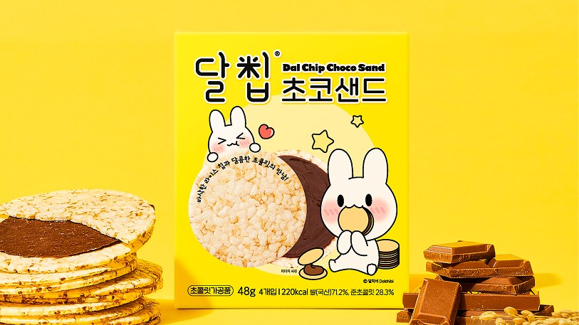
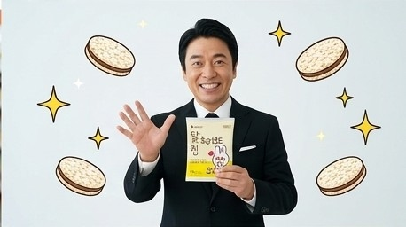
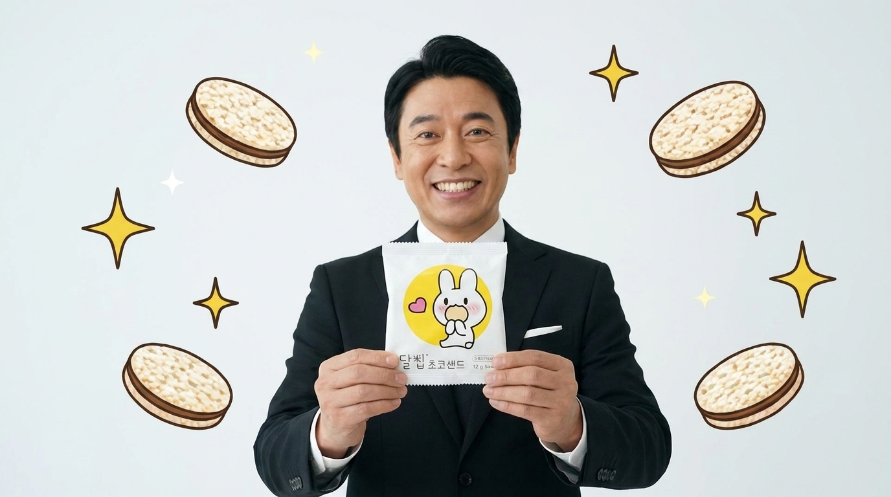

달칩샌드 일본 시장 진출 프로젝트
(주)네이처오다 · KITA 글로벌마케팅마스터 기업 매칭 프로젝트 · 팀 '막내온탑' 4인
(T1.mom AI 영상 제작 파트 100%)
※ 정규 고용이 아닌 KITA 과정 연계 기업 매칭 프로젝트 참여이며, 수행 범위는 기획·광고·홍보·데이터 분석입니다. (실제 수출·납품·판매는 수행하지 않음 / 스카이락 입점·수출 개시 등은 기업의 기존 실적입니다)
AI 광고 영상 제작 · 메타 광고 집행 · 프로모션 기획 · 링크드인 B2B 콘텐츠 운영 · 일본어 랜딩페이지 제작 참여
시장의 빈틈과 데이터가 가리킨 타깃
'달칩샌드'는 기름에 튀기지 않은 국내산 유기농 쌀과자입니다. 시장조사 결과, 일본 쌀과자의 77% 이상이 간장맛에 편중되어 있어 '건강한 간식'에 대한 니즈가 비어있다고 판단했습니다. 또한 현지 식품 구매 결정권의 91%를 여성이 쥔다는 데이터에 착안해, 핵심 타깃을 '3040 아이 엄마'로 좁히고 공략했습니다.
하나의 제품, 이성과 감성 투트랙(Two-track) 공략
같은 3040 부모라도 제품에 반응하는 포인트(소구점)는 다를 것이라 가설을 세우고, 두 가지 톤앤매너로 A/B 테스트 영상을 기획했습니다.
- 감성 타깃 (마법소녀 애니메이션 톤) '안심하고 먹일 수 있는 간식'이라는 메시지를 일본 시청자에게 친숙한 2D 애니메이션 문법으로 풀었습니다.
- 실용 타깃 (실사 코미디 톤) 일본 특유의 콩트와 과장된 리액션(예능 문법)을 참고했습니다. 아이에게 줄 과자 성분표를 꼼꼼히 따지는 상황을 유쾌하게 연출해, '달칩샌드'라는 명확한 해답을 던졌습니다.
다양한 AI 모델 PoC 및 최적 워크플로우 도출
Google Flow/Veo, Higgsfield로 제작한 세로형(9:16) 광고 영상입니다. 캐릭터편 2차 버전(3초 훅 리메이크)이 최종 채택 소재이며, 각 메타 광고로 집행해 비교했습니다.
캐릭터편 1차 버전
캐릭터편 2차 버전최종 채택
코미디편
제작 과정 — 레퍼런스부터 프롬프트까지
'캐릭터 과자 구매자의 69%가 3040 여성'이라는 지표에 맞춰 브랜드 캐릭터 '달치비'를 전면에 내세웠습니다. 일본 시청자의 시선을 3초 안에 잡기 위해 현지 예능과 애니메이션 연출 문법을 차용해 콘티를 기획했습니다.
- AI 영상 변환 씬 단위로 이미지를 먼저 생성한 뒤 영상으로 변환하는 파이프라인을 구축했습니다. 이미지와 영상 간의 퀄리티 간극을 줄이기 위해 프롬프트를 수십 차례 수정하며 디테일을 잡았습니다. (Google Flow/Veo, Higgsfield 활용)
- 후반 작업 캐릭터의 목소리와 효과음은 피쉬오디오(Fish Audio)로 직접 생성해 입혔고, 컷 편집과 더빙 타이밍까지 직접 완성했습니다.
#Fixed Prompt
Dalchibi is fixed and generated.
All moons are full moons.
Refer to Sailor Moon transformation.
After Dalchibi transforms, the apron must continue to be worn.
Dalchip Sand is a 1mm thin rice cracker chocolate sandwich.
Scene 1
Dalchibi resting on a giant, round full moon.
Cute pop-up windows sequentially appear towards the center of the screen with a smartphone notification sound, obstructing Dalchibi's peaceful view.
Notification pop-up content:
「ママがチョコはダメだって……」
「お月さま、ママに怒られないチョコのおやつ、ないかなぁ？」
「すっごくすっごく、チョコが食べたいの……」
「子どもの体にやさしいおやつ、ないかな？」
「手作りする時間はないし……」
「手作り感のある市販のおやつ、ないかな？」
Scene 2
Dalchibi pops out cutely from the center, between the alarm pop-ups.
Dalchibi's line: 「えっ？子どもの体にやさしいおやつ、探してるの？それなら、ボクが作ってあげるチビ！」
Scene 3
Close-up on Dalchibi's face, Dalchibi's eyes sparkle.
Dalchibi transforms into a magical rabbit.
Rotates 360 degrees like a magical girl, equipped with a cute magical girl lace apron with stardust.
Refer to Precure transformation scenes for the transformation.
Scene 4
A charming Moon Kingdom kitchen.
In the center, a magical mortar and pestle.
Dalchibi puts rice and chocolate into the mortar.
Pounds.
Scene 5
Dazzling light emanates from the mortar.
Dalchip Sand box and Dalchip Sand pop out from the mortar!
Scene 6
Dalchibi smiles happily while showing Dalchip Sand.
Also shows the Dalchip package.
캐릭터 일관성 확보: 정밀 프롬프트 제어와 턴어라운드 시트 활용
1) 캐릭터 일관성
2) 제품(패키지) 일관성


통제되지 않는 AI의 무작위성
초기에는 턴어라운드 시트를 기준 이미지(Reference)로 삽입했음에도 불구하고, 씬이나 카메라 앵글이 바뀔 때마다 캐릭터의 복장(앞치마) 디테일이 사라지거나 그림체가 무너지는 문제가 지속적으로 발생했습니다.
집요한 트러블슈팅과 프롬프트 최적화
AI의 무작위성에 타협하지 않고, 의도한 비주얼을 끝까지 구현하기 위해 3단계의 통제 워크플로우를 거쳤습니다.
- 시각적 기준점 강력 고정 정면·측면·후면 5방향 턴어라운드 시트와 3D 모델을 자체 제작해 AI가 인식할 절대적인 시각 기준을 확립했습니다.
-
프롬프트 정밀 제어 (Fixed Prompt)
프롬프트 최상단에
Dalchibi is fixed and generated,equipped with a cute magical girl lace apron등 절대 변해선 안 되는 필수 디테일 요소를 고정값으로 설정하여 변수를 차단했습니다. - 반복 생성과 앵글 제어 이미지에서 영상으로 변환되는 찰나의 간극을 좁히기 위해, 원하는 퀄리티가 나올 때까지 동일한 씬을 수십 차례 반복 생성(Regeneration)하며 파라미터와 앵글을 다듬었습니다.
의도한 디테일과 톤앤매너 완벽 구현
그 결과, 초기 기획했던 마법소녀 컨셉의 디테일이 완벽하게 유지되는 최종 캐릭터 영상을 제작할 수 있었습니다.
AI가 인식할 시각 기준으로 자체 제작한 턴어라운드 시트입니다.

발로 뛰어 찾은 인사이트
책상 앞 데이터에만 의존하지 않았습니다. 네이처오다 대표님 미팅을 통해 제품의 셀링 포인트를 정확히 숙지하고, 실제 일본인 유학생 3명을 심층 인터뷰했습니다. 일본 소비자가 어떤 포인트에서 매력을 느끼고 소비로 이어지는지 생생한 피드백을 수집해 영상 대본과 훅(Hook)에 적극 반영했습니다.


메타 광고 집행 성과 (2주간)
- 1주차 A/B 테스트: 코미디 소재의 클릭 단가가 캐릭터 소재보다 40% 더 비쌌음 — 캐릭터편으로 무게중심 이동
- 1주차 → 2주차: 지출 +74% 대비 클릭 +87%, CTR +20%, CPC -7% — 예산 증액분 이상으로 효율 개선
- 지면별: 페이스북 피드·릴스가 가장 저렴(-24%), 인스타 릴스·스토리는 1.7~2.7배 비쌈, 스레드는 노출의 절반을 가져가지만 반응률은 평균의 1/4
- T1(30-40대 아이엄마) 세트: 링크 CTR 3.50%로 캠페인 평균의 1.4배, 링크 CPC는 평균 대비 3% 저렴
- Lesson Learned: 외부 권한 문제로 최종 구매 전환율(CVR)까지 트래킹하지 못한 점은 아쉬웠지만, 주어진 상황에서 CTR과 CPC 데이터를 최대한 예민하게 분석하고 소재를 최적화(A/B 테스트)하는 실전 감각을 익힐 수 있었습니다.